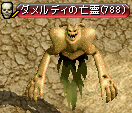

祈りのカケラ対象モンスター Lv750〜
エルン山 迂回路 Lv750〜775 |
● | … 移動ポータル |
◆ … ケニー・フロル（25.128）、バード・フロル（53.273）、ディオン・フロル（96.72）、エリーン・フロル（146.113）の各テレポーターに4万G払うと、他のテレポーター付近へワープできる。
| ● 対象 | ● 対象外 | |
|---|---|---|
 |
ソードボーン | NT-009 ウィル NT-009 カイル NT-009 ハウゼン NT-009 フィオ NT-009 マイケル NT-009 リナ アサシン エルンガーディア エルンシャーマン クリーパー サンダースキン テンプラー ビッグモンキー ブラックアタック ブラックドッグ ブルータス ヘルハウンダー ヘルバンデッド マゴット ロンデー 堕落ソーサラー 山賊 幽霊鎧 毒スパイダー 赤き狂犬 |
 |
ドリフター | |
 |
ファントム | |
 |
食人スコーピオン | |
乾いたオアシス Lv775〜800
 |
● ○ |
… 移動ポータル … ○へワープ |
○ … 石塔（63.188）（89.88）（200.60）（227.209）に4万G払うと、他の石塔付近へワープできる。
| ● 対象 | ● 対象外 | |
|---|---|---|
 |
オアシス守護兵 | オアシスキャンサ オアシスタートル リトルデビル 古代アサシン 古代サキュバス 古代ソーサラー 古代ダークエルフ 古代テンプラー 古代バッファロー 古代フロッグ 古代プリースト 古代戦士 忘却警備隊長 忘却魔道師 |
|  | ダメルディの亡霊 | |
 |
デザートスパイダ | |
漆黒の城 Lv800〜830

● … 移動ポータル
◆ … ニビーダン（11.327）、ラガシオン（47.82）、アルベルタ（328.123）より財団派出所へワープできる。
| ● 対象 | ● 対象外 | |
|---|---|---|
 |
汚染ゴースト | アディライス イグニーティ カバナム クローカー ラジノース ラディノス 汚染サキュバス 汚染シャドウ 汚染デーモン 汚染ピエンド 汚染ロック 汚染ワーカー 汚染剣闘士 汚染古代悪魔 汚染斧槍兵 |
 |
汚染パンプキン | |
 |
汚染吸血鬼 | |
 |
汚染狂魔 | |
 |
汚染骸骨剣士 | |
 |
汚染骸骨戦士 | |
深淵の地底湖 Lv820〜850
 |
● ? ? ? |
… 移動ポータル … ?へワープ … ?へワープ … ?へワープ |
П … 扉（49.22）（197.284）は破壊可能、金の扉鍵でも開く。
П … 扉（91.331）は破壊可能、ダイヤの扉鍵でも開く
П … 扉（184.311）は破壊不可、ダイヤの扉鍵で開く。
| ● 対象 | ● 対象外 | |
|---|---|---|
 |
汚染スライム（緑色） | ベルクス リフレゴーレム 庭園の番人 汚染された使徒 汚染された天使 汚染カマキリ 汚染スライム（水色） 汚染スライム（黄色） 汚染ライダー 汚染毒カエル（ピンク色） 狂気の守護霊 ＤＤ団上級悪魔 ＤＤ団偵察兵 ＤＤ団労働者 ＤＤ団堕落鬼 ＤＤ団暗黒司祭 ＤＤ団狂信徒 ＤＤ団監視者 ＤＤ団黒魔術師 |
 |
汚染バッファロー | |
 |
汚染パンプキン | |
 |
汚染毒カエル（灰色） | |
 |
汚染洞窟亀 | |
※限界突破/メインクエスト以外のクエストを受諾中の場合、汚染スライム（緑色）と汚染毒カエル（灰色）が対象として表示されない場合がある。